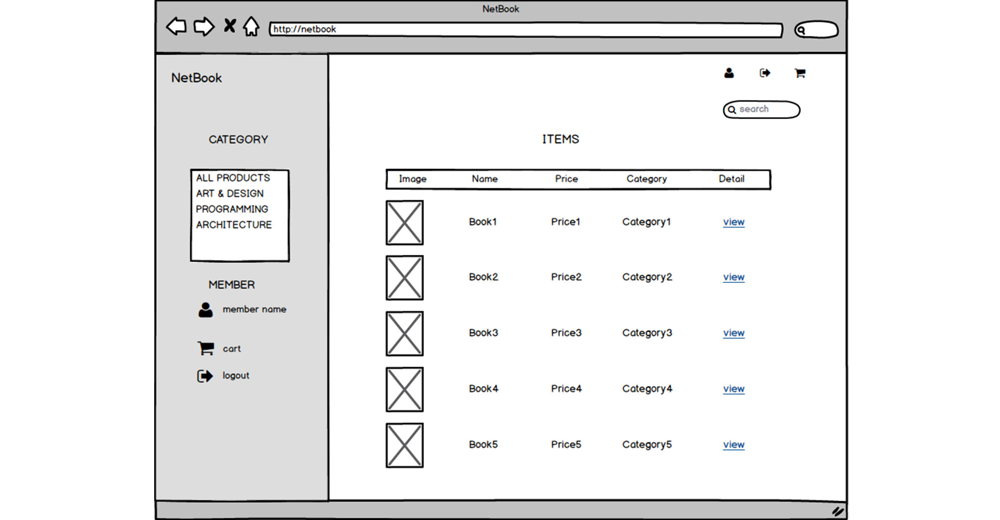
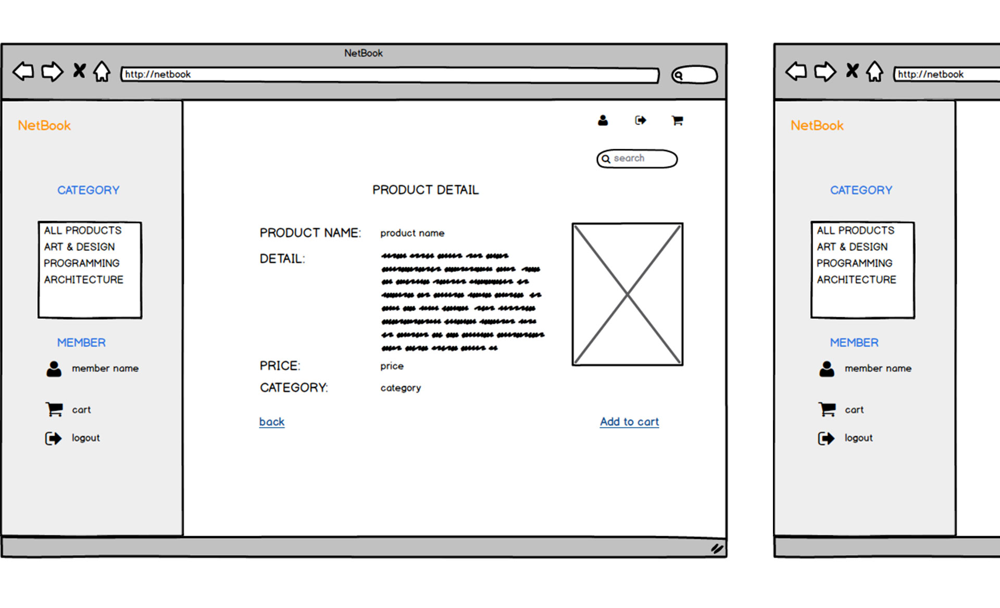
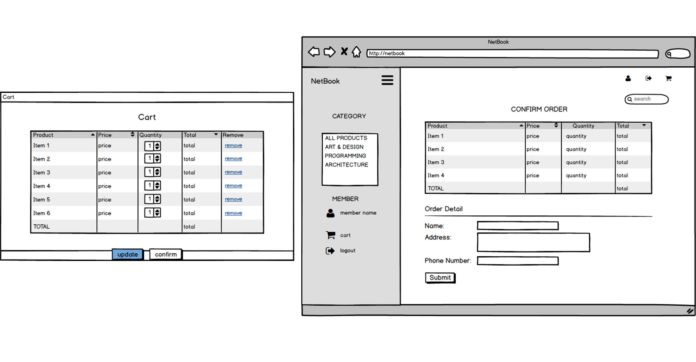
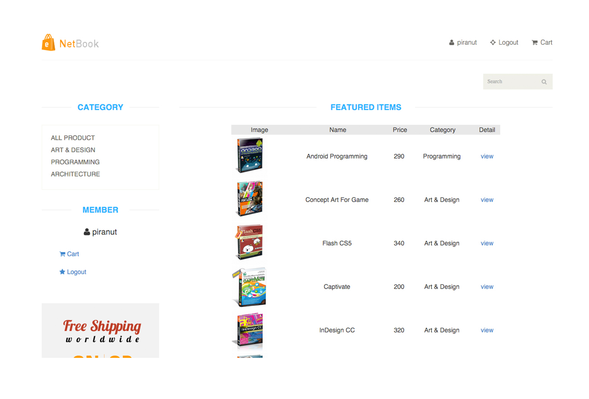
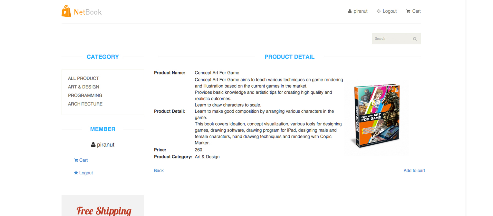
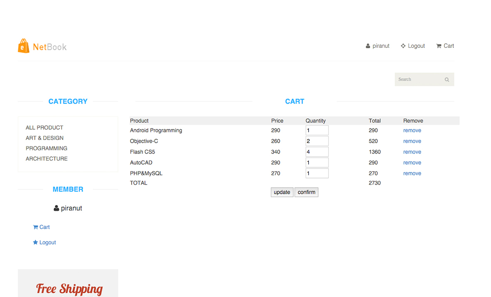
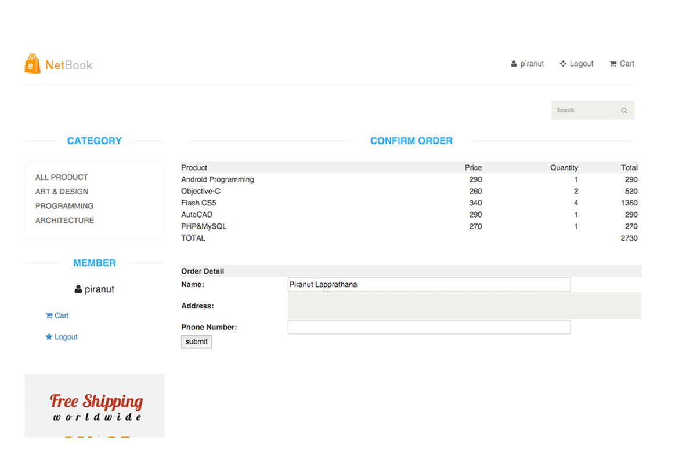

UI/UX Design + Back-end Web Development
NETBOOK
In collaboration with a friend, I created NetBook - a protoype of an e-commerce website that sells technical and design books. The site allows users to create a user name and login information. Just like other e-commerce websites, users can add products to the cart and check out when done. I was responsible for working on the back-end system of the site.
Our goal was to create a UI that makes site navigation easy coupled with a simple authentication method but also something that a book store owner would want to have for managing his/her inventory and orders.
I tweaked some of the HTML and CSS code but mainly implemented the back-end in PHP and MySQL with a little bit of JavaScript. The shot below is the product display page which feeds information like images and product description directly from the MySQL database that I created.
Technologies used: PHP, SQL, MySQL, JavaScript, HTML, CSS
Wireframing
I created digital wireframes in Balsamiq Mockups to organize the page elements and make the UI as clean and simple as possible. Our goal was to let the user focus on finding the right products and eliminate any unnecessary elements on the page.



Final product

The product page lists all the books available for purchase. The sidebar allows the user to narrow down and filter the list of books and easily view only the selected category of books (art&design/programming/architecture).
After the user signs in, the sidebar displays the username for easy identification.

The product detail page gives a quick summary of the product, price, and category which are pulled from the MySQL database. The 'Add to cart' button sends the product id to the cart page when clicked.


The cart page was designed to be responsive and customizable. As the user selects and adds products to the cart, the web automatically sums up the total price and the price for each product also changes in response to the change in quantity.
The user can check out by clicking the confirm button which brings up the relevant information for the user to fill out before submitting the order.